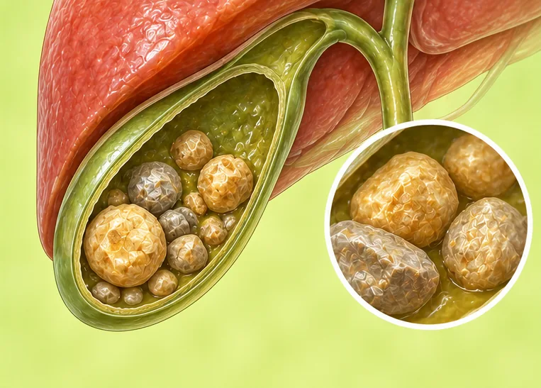
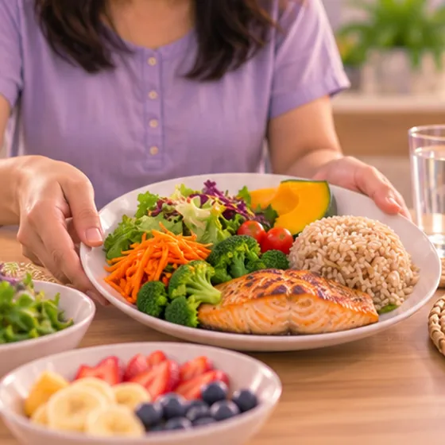

Batu hempedu
Batu keras yang terbentuk dalam pundi hempedu, kantung kecil di bawah hati
Apa itu
Batu hempedu ialah ketulan keras kecil yang terbentuk daripada hempedu dalam pundi hempedu. Ramai tiada tanda, tetapi ada yang sakit di perut kanan atas.
- Perut kanan atas
- Lebih biasa pada dewasa
- Sakit lepas makan berlemak
- Jumpa doktor
- Doktor keluarga, pakar gastroenterologi, pakar bedah
- Biasa pada
- Dewasa, lebih kerap wanita, orang yang berat badan berlebihan atau lebih tua
- Berjangkit
- Tidak
- Perjalanan
- Ada yang senyap bertahun-tahun; ada yang sakit berulang dan perlukan pelan doktor
Tanda biasa
Sakit di perut atasSakit epigastrik Loya, rasa hendak muntahLoya Perut kembungKembung perut Tiada selera makanHilang selera makan
Mengapa ia berlaku

Berat badan berlebihanBerat badan berlebihan
Punca lain
- Terlalu banyak kolesterol atau bahan lain dalam hempedu
- Pundi hempedu tidak kosong dengan baik
- Sejarah keluarga, kehamilan, usia yang meningkat
Jumpa doktor dahulu jika
- Sakit perut yang kuat lebih beberapa jam: ke hospital segera
- Demam dengan menggigil dan sakit perut
- Kulit atau mata kuning, air kencing gelap atau najis pucat
- Muntah berterusan, atau sakit yang merebak ke belakang
Jika mana-mana berkenaan, sila jumpa doktor sebelum sesi.
Halaman ini ialah maklumat am. Sila terus mengambil ubat biasa anda dan terus berjumpa doktor.
Teruskan mengambil ubat biasa anda dan terus berjumpa doktor. Sesi kami ialah sokongan lembut dan tidak menggantikan rawatan perubatan.
Menjaga diri

Makan makanan seimbangDiet seimbang 
Kekalkan berat badan sihatPengurusan berat badan
Lebih banyak cara menjaga diri
- Makan lebih banyak sayur, buah dan bijirin penuh
- Tanya doktor sebelum mengambil sebarang ubat atau suplemen
Beritahu ahli terapi anda
- Kehamilan
- Penyakit buah pinggang atau hati
- Ubat pencair darah
- Demam atau jangkitan aktif
Ahli terapi anda akan menyemaknya bersama anda sebelum bermula.
Soalan dan jawapan
Apakah Batu hempedu?
Batu keras yang terbentuk dalam pundi hempedu, kantung kecil di bawah hati. Batu hempedu ialah ketulan keras kecil yang terbentuk daripada hempedu dalam pundi hempedu. Ramai tiada tanda, tetapi ada yang sakit di perut kanan atas.
Apakah tanda biasa Batu hempedu?
Sakit di perut atas · Loya, rasa hendak muntah · Perut kembung · Tiada selera makan
Mengapa Batu hempedu berlaku?
Berat badan berlebihan
Bagaimana menjaga diri dengan Batu hempedu?
Makan makanan seimbang · Kekalkan berat badan sihat
Bolehkah sesi AI Body Master membantu Batu hempedu?
Sesi ialah sokongan meridian tanpa jarum yang lembut untuk kesejahteraan anda. Ia tidak merawat atau menyembuhkan Batu hempedu dan tidak menggantikan ubat atau doktor anda. Beritahu ahli terapi anda sebelum sesi bermula.
Keadaan berkaitan
Rujukan: General information based on public health sources such as Mayo Clinic, NHS, Cleveland Clinic and NCBI StatPearls.
Halaman dikemas kini: 2026-11-09